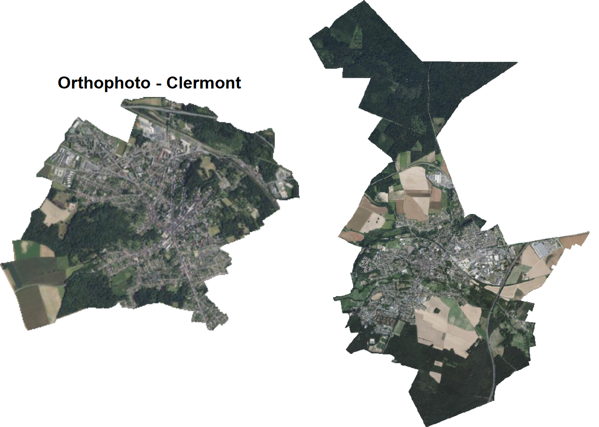
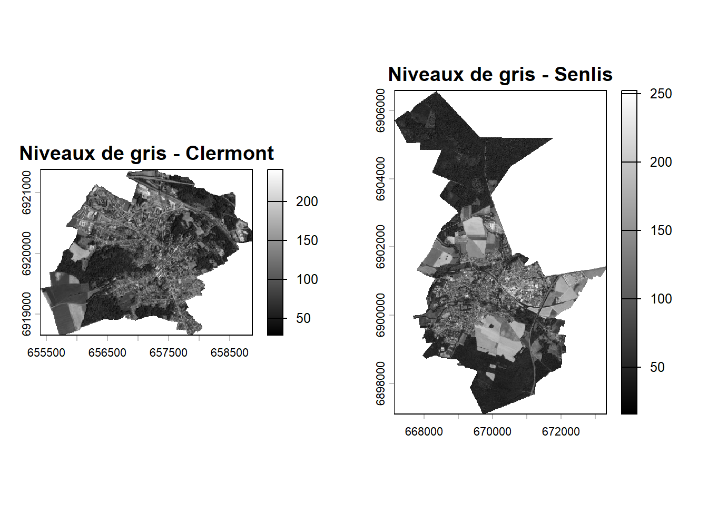
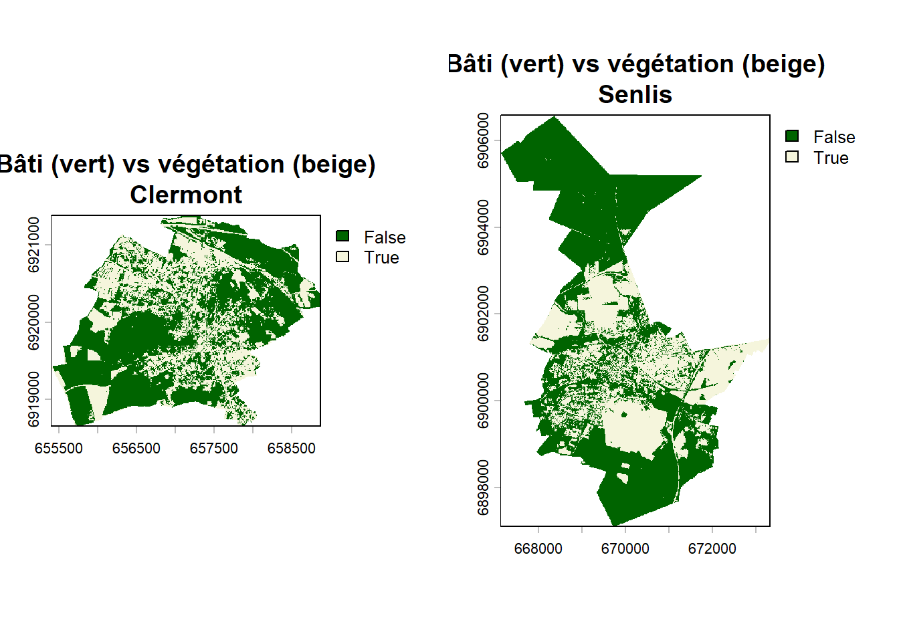
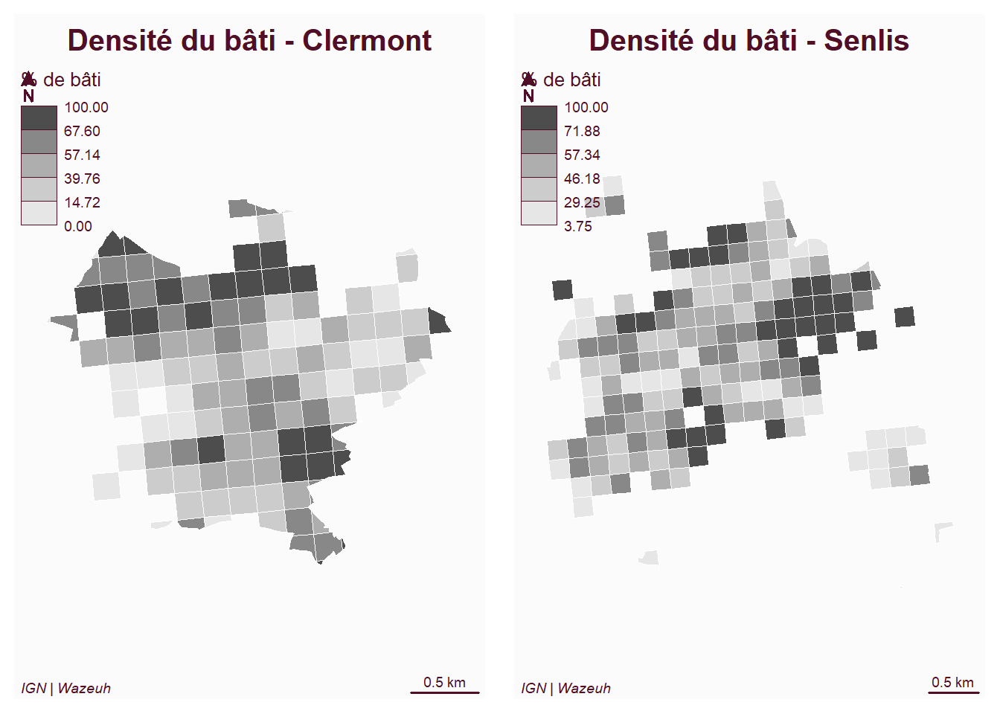
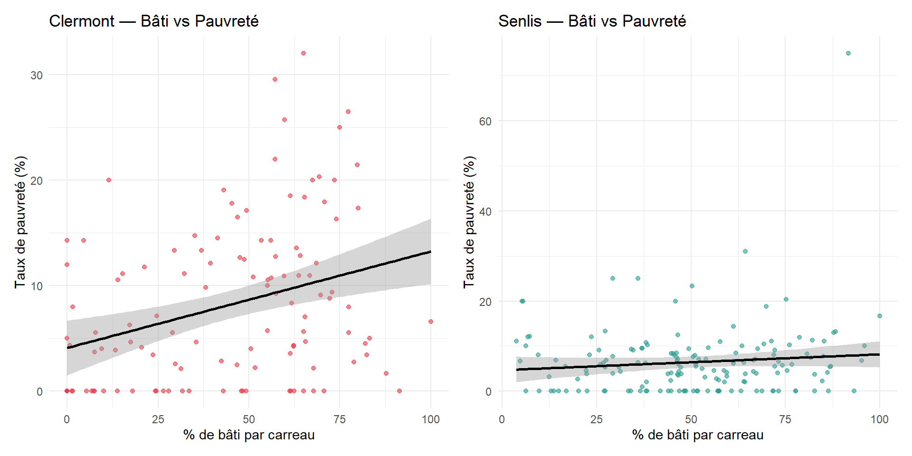

Pour caractériser l’occupation du sol des deux communes, nous
mobilisons les orthophotos haute résolution de l’IGN,
téléchargées dynamiquement via le package happign. Ces
images aériennes en couleur réelle (RVB) permettent de distinguer
visuellement le bâti (toits, voiries) de la végétation (espaces verts,
forêts).
library(happign)
library(terra)
r_clermont <- get_wms_raster(clermont,
layer = "ORTHOIMAGERY.ORTHOPHOTOS",
res = 10, crs = 2154, rgb = TRUE,
filename = "ortho_clermont.tif",
overwrite = TRUE)
r_senlis <- get_wms_raster(senlis,
layer = "ORTHOIMAGERY.ORTHOPHOTOS",
res = 10, crs = 2154, rgb = TRUE,
filename = "ortho_senlis.tif",
overwrite = TRUE)r_cl <- rast("ortho_clermont.tif")
r_se <- rast("ortho_senlis.tif")
r_cl <- crop(r_cl, vect(clermont), mask = TRUE)
r_se <- crop(r_se, vect(senlis), mask = TRUE)
par(mfrow = c(1, 2))
plotRGB(r_cl, main = "Orthophoto - Clermont")
plotRGB(r_se, main = "Orthophoto - Senlis")
On convertit l’image RVB en niveaux de gris (moyenne arithmétique des 3 bandes Rouge / Vert / Bleu). Les pixels clairs correspondent généralement au bâti, les pixels sombres à la végétation.
r_cl_gris <- mean(r_cl[[1:3]])
r_se_gris <- mean(r_se[[1:3]])
par(mfrow = c(1, 2))
plot(r_cl_gris, main = "Niveaux de gris - Clermont", col = grey(0:255/255))
plot(r_se_gris, main = "Niveaux de gris - Senlis", col = grey(0:255/255))
Nous appliquons un seuil binaire à 100 sur les niveaux de gris : tout pixel > 100 est classé comme bâti (clair), tout pixel ≤ 100 comme végétation (sombre).
r_cl_seuil <- r_cl_gris > 100
r_se_seuil <- r_se_gris > 100
par(mfrow = c(1, 2))
plot(r_cl_seuil, main = "Bâti (vert) vs végétation (beige)\nClermont",
col = c("darkgreen", "beige"))
plot(r_se_seuil, main = "Bâti (vert) vs végétation (beige)\nSenlis",
col = c("darkgreen", "beige"))
L’intérêt principal de cette analyse raster est de caractériser chaque carreau Filosofi par son taux de bâti. On extrait pour chaque carreau la moyenne du masque binaire (= proportion de pixels bâtis).
car_clermont$pct_bati <- terra::extract(r_cl_seuil, vect(car_clermont),
fun = mean, na.rm = TRUE)[, 2] * 100
car_senlis$pct_bati <- terra::extract(r_se_seuil, vect(car_senlis),
fun = mean, na.rm = TRUE)[, 2] * 100
par(mfrow = c(1, 2))
mf_map(car_clermont, var = "pct_bati", type = "choro",
nbreaks = 5, pal = rev(gray.colors(5)), border = "white",
leg_title = "% de bâti", leg_pos = "topleft")
mf_layout(title = "Densité du bâti - Clermont", credits = "IGN | Wazeuh")
mf_map(car_senlis, var = "pct_bati", type = "choro",
nbreaks = 5, pal = rev(gray.colors(5)), border = "white",
leg_title = "% de bâti", leg_pos = "topleft")
mf_layout(title = "Densité du bâti - Senlis", credits = "IGN | Wazeuh")
Le croisement entre l’analyse vecteur (Filosofi) et l’analyse raster (orthophotos) révèle un fait essentiel : à Clermont, les carreaux où le taux de pauvreté est élevé correspondent globalement aux zones où la densité de bâti est la plus forte (cœur urbain, habitat collectif). À Senlis, en revanche, les carreaux à fort taux de pauvreté sont isolés dans des secteurs à bâti dense, entourés majoritairement de zones pavillonnaires aérées ou de forêt.
L’analyse raster confirme donc la lecture vecteur : la pauvreté est associée au bâti dense, mais selon des configurations spatiales différentes — diffuse à Clermont, concentrée à Senlis.
Orthophoto IGN (RGB, 10m)
│
│ st_transform → Lambert 93
▼
Reprojection
│
│ crop + mask
▼
Découpage sur la commune
│
│ mean des 3 bandes
▼
Niveaux de gris
│
│ seuillage > 100
▼
Masque binaire bâti / végétation
│
│ terra::extract sur les carreaux
▼
% de bâti par carreau FilosofiL’intérêt du croisement raster/vecteur est de tester si la
densité du bâti (issue des orthophotos) est corrélée au
taux de pauvreté (issu de Filosofi). On dispose déjà de
pct_bati calculé précédemment.
library(ggplot2)
# Clermont
gg_cl <- ggplot(car_clermont, aes(x = pct_bati, y = tx_pauvrete)) +
geom_point(alpha = 0.6, color = "#e63946") +
geom_smooth(method = "lm", se = TRUE, color = "black") +
labs(title = "Clermont — Bâti vs Pauvreté",
x = "% de bâti par carreau",
y = "Taux de pauvreté (%)") +
theme_minimal()
# Senlis
gg_se <- ggplot(car_senlis, aes(x = pct_bati, y = tx_pauvrete)) +
geom_point(alpha = 0.6, color = "#2a9d8f") +
geom_smooth(method = "lm", se = TRUE, color = "black") +
labs(title = "Senlis — Bâti vs Pauvreté",
x = "% de bâti par carreau",
y = "Taux de pauvreté (%)") +
theme_minimal()
library(patchwork)
gg_cl + gg_se
cor_cl <- cor(car_clermont$pct_bati, car_clermont$tx_pauvrete, use = "complete.obs")
cor_se <- cor(car_senlis$pct_bati, car_senlis$tx_pauvrete, use = "complete.obs")
cat("Corrélation bâti/pauvreté — Clermont :", round(cor_cl, 2), "\n")## Corrélation bâti/pauvreté — Clermont : 0.32## Corrélation bâti/pauvreté — Senlis : 0.1À Clermont, la corrélation entre densité du bâti et taux de pauvreté est positive : les carreaux les plus denses sont aussi les plus pauvres, ce qui traduit une concentration de la pauvreté dans le cœur urbain (habitat collectif, logement social).
À Senlis, la relation est plus faible voire inversée : les carreaux denses ne sont pas nécessairement les plus pauvres, ce qui reflète la présence d’un centre historique aisé à forte densité bâtie.
Ce croisement confirme que la forme urbaine seule ne détermine pas le niveau de vie — le contexte territorial et l’histoire sociale de chaque commune jouent un rôle déterminant.